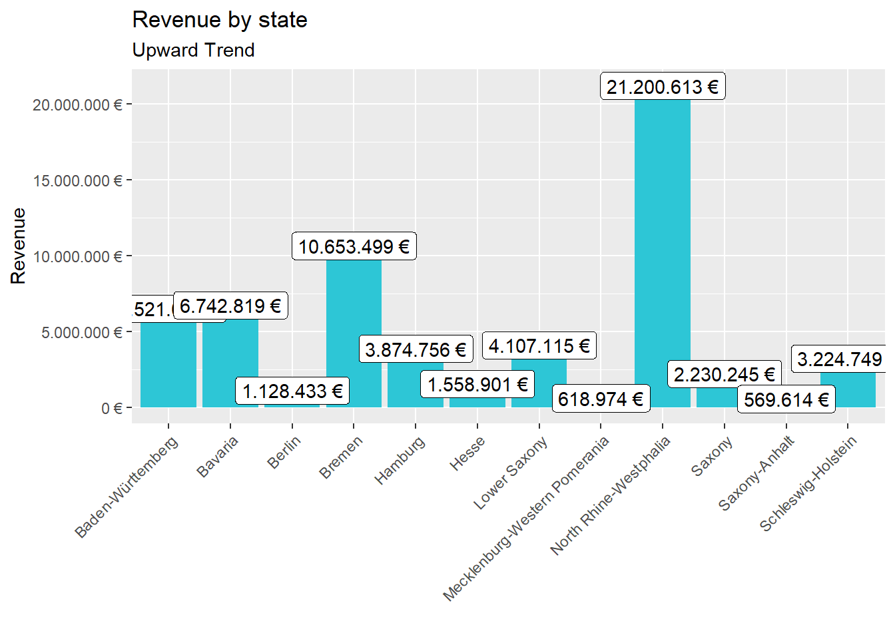
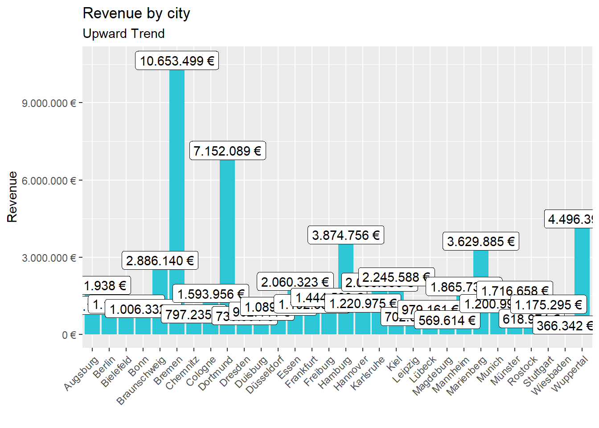
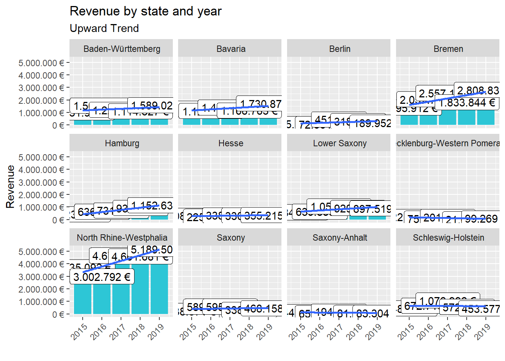

This is a solution website for 4 challenges given in the course “Business Data Science Basics”.Below you can see both R-scripts and results of individual challenges.
Last compiled: 2020-12-05
In the first task, Different analysis was carried out on bike sales with respect to year and location. First analysis was on sales by location and it was found out to be North Rhine-Westphalia with highest sales Second analysis was on sales by years for different states.
# Data Science at TUHH ------------------------------------------------------
# SALES ANALYSIS ----
# 1.0 Load libraries ----
library(tidyverse)
library(readxl)
library(lubridate)
library("writexl")
# 2.0 Importing Files ----
bikes_tbl <- read_excel(path = "~/Data science/DS_101/00_data/01_bike_sales/01_raw_data/bikes.xlsx")
orderlines_tbl <- read_excel(path = "~/Data science/DS_101/00_data/01_bike_sales/01_raw_data/orderlines.xlsx")
bikeshops_tbl <- read_excel(path = "~/Data science/DS_101/00_data/01_bike_sales/01_raw_data/bikeshops.xlsx")
# 3.0 Examining Data ----
View(orderlines_tbl)
View(bikeshops_tbl)
View(bikes_tbl)
# 4.0 Joining Data ----
bike_orderlines_joined_tbl <- orderlines_tbl %>% left_join(bikes_tbl, by = c("product.id" = "bike.id")) %>% left_join(bikeshops_tbl, by = c("customer.id" = "bikeshop.id"))
# 5.0 Wrangling Data ----
bike_orderlines_wrangled_tbl <- bike_orderlines_joined_tbl %>% separate(col = location, into = c("city", "State"), sep = ",") %>%
mutate(total.price = price * quantity) %>% rename(bikeshop = name) %>% set_names(names(.) %>% str_replace_all("\\.", "_"))
# 6.0 Business Insights ----
# 6.1 Sales by State ----
# Step 1 - Manipulate
sales_by_state_tbl <- bike_orderlines_wrangled_tbl %>% select(State, total_price) %>% group_by(State) %>% summarize(sales = sum(total_price)) %>%
mutate(sales_text = scales::dollar(sales, big.mark = ".", decimal.mark = ",", prefix = "", suffix = " €"))
View(sales_by_state_tbl)
sales_by_city_tbl <- bike_orderlines_wrangled_tbl %>% select(city, total_price) %>% group_by(city) %>% summarize(sales = sum(total_price)) %>%
mutate(sales_text = scales::dollar(sales, big.mark = ".", decimal.mark = ",", prefix = "", suffix = " €"))
View(sales_by_city_tbl)
# Step 2 - Visualize
sales_by_state_tbl %>%
ggplot(aes(x = State, y = sales)) +
geom_col(fill = "#2DC6D6") +
geom_label(aes(label = sales_text)) +
geom_smooth(method = "lm", se = FALSE) +
scale_y_continuous(labels = scales::dollar_format(big.mark = ".", decimal.mark = ",", prefix = "", suffix = " €")) +
labs(title = "Revenue by state", subtitle = "Upward Trend", x = "", y = "Revenue")+
theme(axis.text.x = element_text(angle = 45, hjust = 1))
sales_by_city_tbl %>%
ggplot(aes(x = city, y = sales)) +
geom_col(fill = "#2DC6D6") +
geom_label(aes(label = sales_text)) +
geom_smooth(method = "lm", se = FALSE) +
scale_y_continuous(labels = scales::dollar_format(big.mark = ".", decimal.mark = ",", prefix = "", suffix = " €")) +
labs(title = "Revenue by city", subtitle = "Upward Trend", x = "", y = "Revenue")+
theme(axis.text.x = element_text(angle = 45, hjust = 1))
# 6.2 Sales by Year and location ----
# Step 1 - Manipulate
sales_by_location_year_tbl <- bike_orderlines_wrangled_tbl %>% select(State, order_date, total_price) %>% mutate(year = year(order_date)) %>%
group_by(State ,year) %>% summarize(sales = sum(total_price)) %>% mutate(sales_text = scales::dollar(sales, big.mark = ".", decimal.mark = ",", prefix = "", suffix = " €"))
View(sales_by_location_year_tbl)
# Step 2 - Visualize
sales_by_location_year_tbl %>%
ggplot(aes(x = year, y = sales)) +
geom_col(fill = "#2DC6D6") +
geom_label(aes(label = sales_text)) +
geom_smooth(method = "lm", se = FALSE) +
scale_y_continuous(labels = scales::dollar_format(big.mark = ".", decimal.mark = ",", prefix = "", suffix = " €")) +
labs(title = "Revenue by state and year", subtitle = "Upward Trend", x = "", y = "Revenue")+
theme(axis.text.x = element_text(angle = 45, hjust = 1))+
facet_wrap(vars(State))
# 7.0 Writing Files ----
# 7.1 Excel ----
bike_orderlines_wrangled_tbl %>% write_xlsx("~/Data science/DS_101/00_data/01_bike_sales/02_wrangled_data/bike_orderlines.xlsx")
# 7.2 CSV ----
bike_orderlines_wrangled_tbl %>% write_csv("~/Data science/DS_101/00_data/01_bike_sales/02_wrangled_data/bike_orderlines.csv")
# 7.3 RDS ----
bike_orderlines_wrangled_tbl %>% write_rds("~/Data science/DS_101/00_data/01_bike_sales/02_wrangled_data/bike_orderlines.rds")This piece of code is used to request weather data from provider named “7timer”
library(httr)
resp <- GET("http://www.7timer.info/bin/api.pl?lon=113.17&lat=23.09&product=astro&output=json")
resp## Response [http://www.7timer.info/bin/astro.php?lon=113.2&lat=23.1&ac=0&unit=metric&output=json&tzshift=0]
## Date: 2020-12-05 21:14
## Status: 200
## Content-Type: text/html; charset=UTF-8
## Size: 5.35 kB
## {
## "product" : "astro" ,
## "init" : "2020120512" ,
## "dataseries" : [
## {
## "timepoint" : 3,
## "cloudcover" : 1,
## "seeing" : 7,
## "transparency" : 2,
## "lifted_index" : 15,
## ...Following piece of code gathers the cycle models from radon bikes and its priceses
library(tidyverse) # Main Package - Loads dplyr, purrr, etc.
library(rvest) # HTML Hacking & Web Scraping
library(xopen) # Quickly opening URLs
library(jsonlite) # converts JSON files to R objects
library(glue) # concatenate strings
library(stringi)
url_home <- "https://www.radon-bikes.de/"
xopen(url_home) ## Running cmd /c start "\"\"" /b "https://www.radon-bikes.de/"html_home <- read_html(url_home)
list_of_product_types <- html_home%>%
html_nodes(css = ".megamenu__item > a")%>%
html_text()
list_of_products_url <- html_home %>%
html_nodes(".megamenu__item > a") %>%
html_attr("href") %>%
enframe(name = NULL, value = "url") %>%
mutate(url = str_glue("https://www.radon-bikes.de{url}"))
# selecting first bike category url
bike_category_url <- list_of_products_url$url[1]
xopen(bike_category_url)## Running cmd /c start "\"\"" /b \
## "https://www.radon-bikes.de/mountainbike/hardtail/"# Get the URLs for the bikes of the first category
html_bike_category <- read_html(bike_category_url)
temp_url <- html_bike_category%>%
html_node(".a-button--hollow-secondary")%>%
html_attr("href")%>%
enframe(name = NULL, value = "url") %>%
mutate(url = str_glue("https://www.radon-bikes.de{url}"))
temp_url <- temp_url$url[1]
xopen(temp_url)## Running cmd /c start "\"\"" /b \
## "https://www.radon-bikes.de/mountainbike/hardtail/bikegrid/"bike_category_grid_html <- read_html(temp_url)
list_of_product_names <- bike_category_grid_html%>%
html_nodes(css=".m-bikegrid__info > a > div > h4")%>%
html_text%>%
stringr::str_replace_all(pattern = "\n","")%>%
stringr::str_replace_all(pattern = " ","")%>%
enframe(name = NULL, value = "NAME")
list_of_product_prices <- bike_category_grid_html%>%
html_nodes(css=".m-bikegrid__price--active")%>%
html_text()%>%
stringr::str_extract(pattern = "[0-9€]+")%>%
stringr::str_replace(pattern = "€","")%>%
as.numeric()%>%
enframe(name = NULL, value = "PRICE")
list_of_product_prices = na.omit(list_of_product_prices)
bike_df <- data.frame(list_of_product_names,list_of_product_prices)
saveRDS(bike_df, "bike_data.rds")
head(bike_df,10)## NAME PRICE
## 1 JEALOUS 8.0 2599
## 2 JEALOUS 9.0 2999
## 3 JEALOUS 10.0 3999
## 4 JEALOUS 10.0 EA 5299
## 5 JEALOUS 10.0 3699
## 6 JEALOUS 10.0 EA 3799
## 7 NEW JEALOUS SUPERLITE 1X 999
## 8 JEALOUS AL 8.0 999
## 9 JEALOUS AL 8.0 HD 1299
## 10 JEALOUS AL 9.0 1499